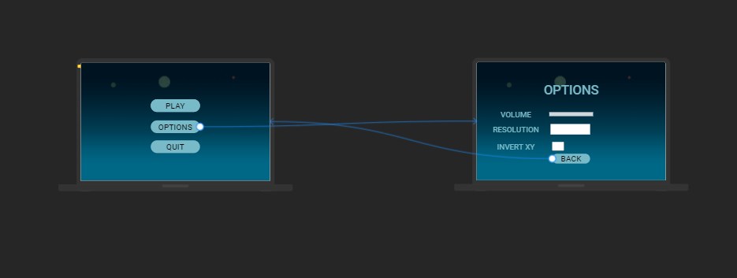

Structure
The wireframe of the UI
Here is the link in which you can (hopefully) test the prototype.
The design pattern used
The design pattern i've used when creating the menu is State Pattern. In the state design pattern, menus are states, buttons are events that trigger transitions to other states. In our case, from the State: Main Menu wew transition to the State:Options Menu through the options button (event). Vice versa, using the "back" button (event).
Personas
I think the UI has the same effects on every persona that will interact with it. Pros: very intuitive, simple and concise Cons: maybe too simple, the background is kind of empty and the color scheme deserves some refurbishment.
QOC
Not sure what i should write here tbh, apologies.
Actual project
Here is some screenshots of the UI inside Unity: